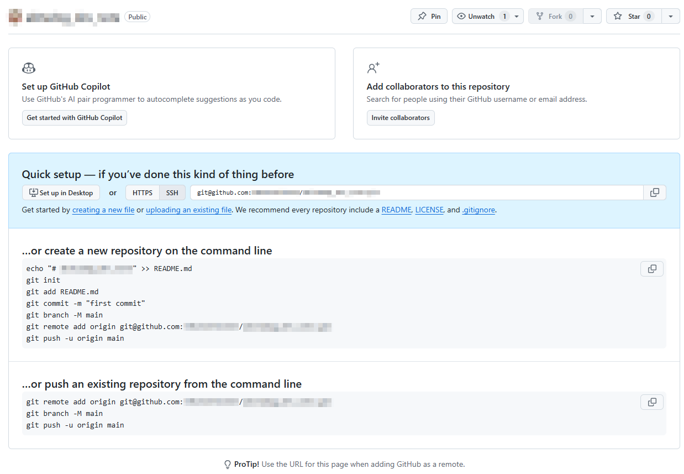

Git
このドキュメントは、下記の方法によりGitHub Pagesで公開している。
ローカルリポジトリを作成し、リモートリポジトリにpushする
手順
ローカルリポジトリ作成、内容のコミット
ルートフォルダ内で
git init
でリモートリポジトリを作成。
git add -A
git commit -m "comment"
で内容をコミットする。
SSH鍵を作る
SSH鍵は通常、
C:\Users(ユーザー)\(ユーザ名)\.ssh
内に作成する。
作成中。
リモートリポジトリを作成とpush
GitHubにログインし、右上の「＋」から「Create New Repository」

リポジトリ作成時に出てくるガイダンスに従って、
git remote add origin git@github.com:XXXX/XXXX.git
git branch -M main
git push -u origin main
でリモートリポジトリにpushできる。 originはリモートとの関連付けの名前で、他の名前でも良い。
トラブルシューティング
git remoteの設定を間違えた-
rm(remote, 削除)により削除する。
git remote -v # 情報を表示
git remote rm origin
git管理されたくないファイルがGit管理されてしまった-
.gitignoreを削除するだけでは反映されず、一旦キャッシュを削除する必要がある。 .gitignoreを編集したのち、下記コマンドでaddし直す。
git rm -r --cached . # ファイル全体キャッシュ削除
git add -A # 改めて全ファイルを管理に入れ直す(gitignoreの指定は反映される)
git ls-files -oi --exclude-standard # 管理外のファイルを確認できる
参考ページ
MkDocsで作ったページをGitHub Pagesで公開する
手順
参考ページ
- GitHub PagesをMKDocsで作ってみた
- mkdocs-materialとGitHub PagesでMkDocsを作成する
- mkdocsを使ったGitHub Pagesの作成方法
- 【初心者向け】【入門】GitHub Actionsとは？
基本操作
git init-
フォルダをGit管理に対応させる。
git init